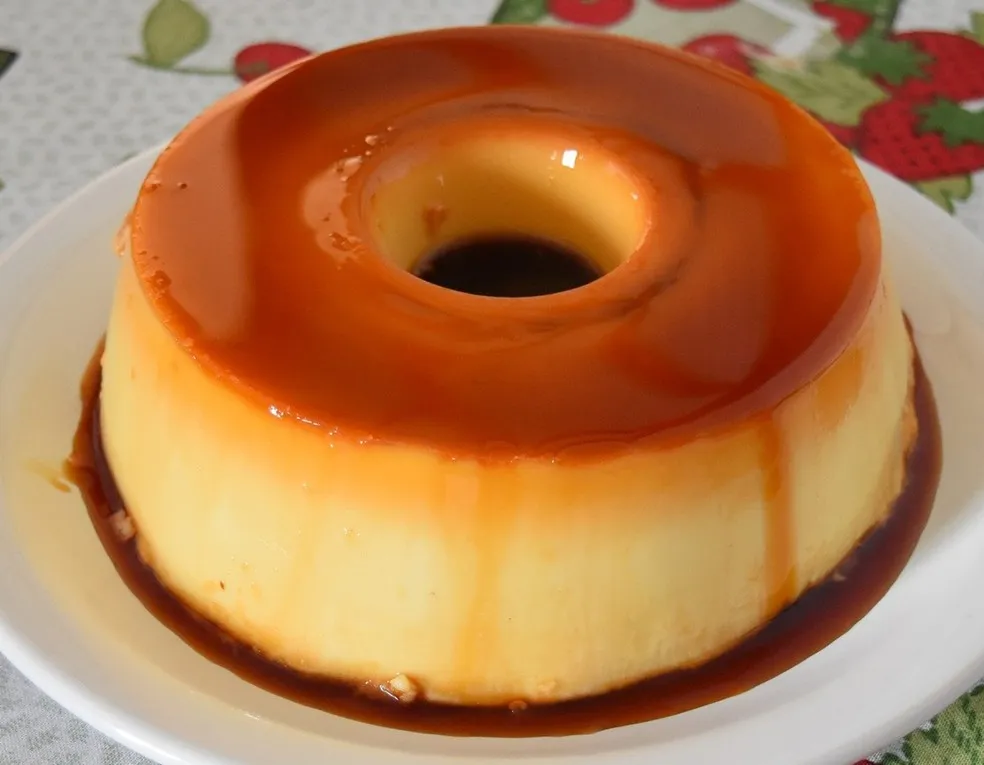

Pudim de Leite Condensado

Uma das sobremesas mais tradicionais, o clássico pudim de leite condensado é uma das
sobremesas mais fáceis de se preparar. Confira a receita!
Tempo de preparo: 5 a 10 mins
Rendimento: 8 porções
Medida da xícara: 200ml
--------------- Para a calda --------------
Ingredientes:
- 1/4 xícara de açúcar
- 1/2 xícara ou 3 colheres (sopa) de água
Modo de Preparo:
- Use uma forma redonda com um furo no meio. Misture os ingredientes na forma previamente antes de levar ao fogo.
- Leve a forma ao fogo, misture os ingredientes em fogo médio por 3 mins até o açúcar começar a caramelizar
- Quando o açúcar estiver dourado, desligue o fogo e espalhe a calda por toda a forma. Reserve.
--------------- Para o pudim --------------
Ingredientes:
- 1/2 lata de leite condensado
- 1/2 lata de leite (a mesma medida da lata de leite condensado)
- 2 ovos inteiros
Modo de Preparo:
- Coloque no liquidificador os ovos, o leite condensado e o leite
- Bata por 2 minutos
- Coloque na forma já caramelizada
- Tampe a abertura da forma com papel alumínio, fixe bem, para evitar qualquer vazamento
- Leve a forma a panela de pressão, adicione água aos poucos, evite que a água ultrapasse metade da forma
- Feche a panela e deixe em fogo alto até pegar pressão
- Assim que pegar pressão, adicione um timer de 5 minutos, após o timer, desligue e tire a pressão
- Retire o papel alumínio, somente o suficiente para realizar o teste do garfo
- Com o garfo, fure o pudim e verifique se o mesmo saí limpo
- Se sim, está pronto, se não, deixe por mais 2 minutos na pressão
- Retire a forma da panela e deixe esfriar
- Desenforme ainda morno, para polpar trabalho
- Leve a geladeira por 2/3 horas